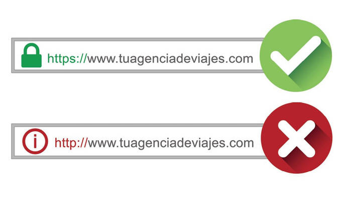

Hoy en día usamos internet para todo. Podemos facilitar muchos trámites gracias a él: transacciones, correos, mensajes y, lo que nos trae hoy, solicitar un turno en un sanatorio de forma online.
“Muchos pasamos por esta situación: entramos a un sitio y nos da dos espacios para poner nuestros datos como DNI o contraseña, pero poca gente se pregunta qué tan seguro es poner estos datos tan personales.”
¿Qué ocurre por detrás al poner estos datos?
Cuando ingresás datos sensibles como tu DNI y contraseña en una página web, el navegador envía esa información a través de un protocolo. Si el sitio usa HTTP, tus datos viajan en texto plano y pueden ser interceptados. En cambio, si usa HTTPS (la versión segura), toda la información es cifrada usando SSL/TLS, lo que impide que terceros puedan leerla.
“En esta imagen se ejemplifica cuando accedemos a un sitio seguro y uno que no. Hoy en día los navegadores nos alertan de esto y mucha gente no toma conciencia de lo que significa una falla como esta.”
Demostración
En el mundo de la ciberseguridad se utilizan herramientas para identificar estos descuidos. Para este experimento utilicé Wireshark, una herramienta muy útil para estos casos. Puede capturar todo lo que pasa por una conexión en tiempo real: páginas visitadas, datos enviados y destinos.

"En esta imagen pongo las credenciales que pide la página del sanatorio: DNI y contraseña."
Captura de los datos
Antes de iniciar sesión puse en marcha Wireshark para que empezara a capturar el tráfico. Luego ingresé las credenciales y detuve la captura. En la siguiente imagen, filtré por protocolo HTTP, lo que me permitió ver los datos que envié al hacer clic en “iniciar sesión”. Estos datos viajaban en formato JSON (una estructura de texto usada frecuentemente en la web).
¿Qué ocurre con esto?
El problema es que desde otro dispositivo conectado a la misma red se puede capturar este tráfico. Un atacante podría interceptar tus datos y robar tu información. No solo podría pasar con una página médica, sino con foros, redes sociales, bancos u otros servicios. La solución es simple: siempre verificar si el sitio es seguro y si el navegador advierte sobre fallos de seguridad.